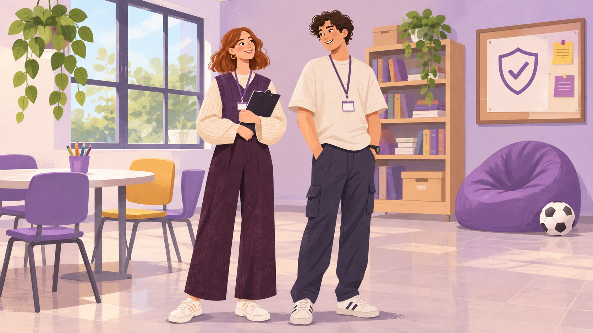

מעברים פנויים
מוודאים שאין תיקים, כבלים או חפצים שחוסמים את המעברים.
לפני שמתחילים להדריך, לומדים לשמור על סביבה בטוחה. כאן נכיר את חדר הפעילות, נזהה מפגעים ונגלה כיצד לפעול נכון.

למידה קצרה • התנסות אינטראקטיבית • משוב מיידי
לפני שמתחילים להדריך, נכיר את הסביבה ונלמד כיצד לשמור על בטיחות המשתתפים. בסיום ההדרכה נדע לזהות מפגעים ולבחור כיצד לפעול נכון.
נלמד לזהות סיכונים ומפגעים בחדר הפעילות.
נכיר דרכי פעולה בטוחות להתמודדות עם מפגעים.
נתנסה במשימה אינטראקטיבית ונקבל משוב מיידי.
לפני כל פעילות, עוברים על שלושה דברים חשובים כדי לוודא שחדר הפעילות מוכן ובטוח.
מוודאים שאין תיקים, כבלים או חפצים שחוסמים את המעברים.
בודקים שהכיסאות, השולחנות והציוד תקינים ובטוחים לשימוש.
סורקים את החדר, מזהים מפגעים ומוודאים שהסביבה מוכנה לפעילות.
לא ממשיכים בפעילות ולא מאלתרים תיקון. מרחיקים את המשתתפים מהמפגע ומדווחים לרכז לפני שממשיכים.
לפני תחילת הפעילות, בודקים את החדר. לחיצה על החפצים מאפשרת לגלות אילו מהם מסוכנים.
השאלון ייפתח אחרי שנבדוק את ארבעת המפגעים ונצבור 45 שניות במסך החדר. בכל מפגע, קוראים על הסיכון ועל הפעולה הראשונית ובוחרים ״חזרה לחדר״. הזמן נצבר בזמן סריקת החדר וקריאת ההסברים, ונעצר במעבר ללשונית או לחלון אחרים.
כל מפגע שווה עד 10 נקודות. כל תשובה שגויה חדשה שנבדקת מפחיתה 5 נקודות באותו מפגע, עד מינימום 0.
זמן שנותר לסריקת החדר: 45 שניות
כדי לראות את החדר כולו, אפשר להחליק את התצוגה ימינה ושמאלה וללחוץ על חפץ לבדיקה. במקלדת: אפשר להתמקד בחדר ולהשתמש בחיצים לגלילה, או לעבור בין החפצים באמצעות Tab.

לא ניתן לטעון את תמונת חדר המשחק. יש לוודא שהקובץ game-room.png נמצא בתיקייה assets/images.
💡 טיפ: לא כל חפץ בחדר הוא מפגע. כדאי לבדוק היטב!
השאלון ייפתח לאחר בדיקת המפגעים והשלמת זמן הסריקה.
סרקנו את החדר ובדקנו מה הסיכון ומהי הפעולה הראשונית בכל מפגע. עכשיו נבדוק כיצד נכון לפעול במצבים חדשים, לפני הפעילות ובמהלכה.
ממשיכים לאתגר האחרון?
אחרי שלמדנו לזהות מפגעים בחדר, הגיע הזמן לבדוק כיצד נכון לפעול במצבים חדשים שיכולים להתרחש במהלך פעילות במרכז הנוער.
יש לענות על שלוש השאלות. אפשר לבדוק את התשובות ולנסות שוב.
בדקנו את ארבעת המפגעים והכרנו דרכי פעולה בטוחות. גם התרגול המסכם הושלם בהצלחה, ועכשיו יש יותר ידע וכלים לקראת הפעילות הבאה במרכז הנוער!